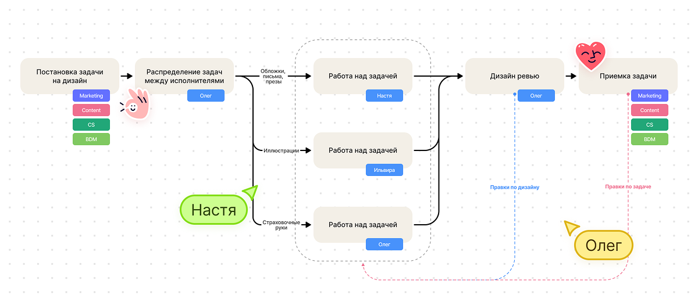

Настроил процесс и ускорил работу с маркетингом

Я работал единственным дизайнером, и весь фокус уходил на продуктовые задачи. Из‑за этого в маркетинге накапливались задачи без статусов и понятных сроков — команды не понимали, когда ждать результат.
Что сделал
- Понял, что один уже не вывожу, и инициировал найм помощника на парт‑тайм.
- Подготовил тестовое задание и участвовал в отборе кандидатов.
- Разложил процесс: собрал схему в Miro, описал порядок работы в Confluence.
- Создал общий чат и настроил канбан‑доску в Trello.
- Собрал команды (маркетинг, менеджеры по работе с клиентами, бизнес‑менеджеры) и договорился с ними о новом порядке работы.
- Менеджерил задачи двух исполнителей — дизайнера и иллюстратора: распределял, проверял, помогал синхронизироваться по срокам.
Как мы договорились работать
Все задачи идут по единому треку. Сроки согласуем со стейкхолдером сразу при постановке. В Trello видно загрузку исполнителей, статусы и ожидаемую дату готовности.
Что изменилось
Задачи перестали лежать неделями. Команды видят, кто чем занят и когда материал будет готов. Маркетинговый поток стал прозрачным и предсказуемым.
Сложности
Первый парт‑тайм дизайнер был недостаточно вовлечён: с нашей стороны нагрузка была нестабильной, а качество со стороны исполнителя — неровным, приходилось много переделывать. Поток всё равно замыкался на мне — много ревью и менеджеринга.
Что решили
Наняли другого дизайнера. Сразу договорились о самостоятельности и зонах ответственности. Поток стал стабильным, а работа — более автономной.
Результаты
- Процесс заработал без моего постоянного участия.
- Я высвободил время под продукт.
- Маркетинговые материалы стали разрабатываться в ~4–6 раз быстрее, без хаоса и долгих простоев.